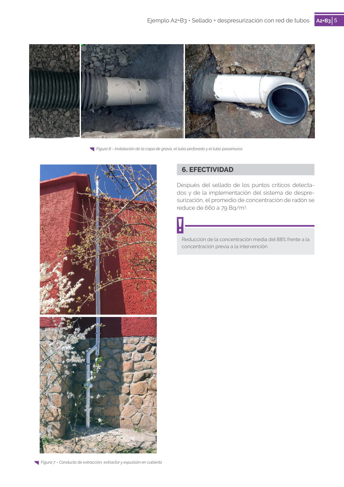

<!doctype html>
<html lang="es"><head><meta charset="utf-8">
<meta name="viewport" content="width=device-width, initial-scale=1">
<title>GUIA · p. 77 — Página 77</title><link rel="stylesheet" href="../estilo.css">
</head><body>
<nav><a href="../index.html">Índice</a> › <a href="../doc/guia-pdf-f3314b0414fe-sin-fecha-e58e54b822cf.html">GUIA</a> › p. 77</nav>

<header class="meta">
<p><strong>GUIA</strong> · Página 77 · versión sin-fecha</p>
<p>SHA256: <code>e58e54b822cf4ab00e258f0eb50c0f06a8c04e3730a7f530d224485e2a5bb02e</code> · página física 77 de 82 · métodos de encabezado
solo si están cotejados.</p>
<p><a href="../doc/guia-pdf-f3314b0414fe-sin-fecha-e58e54b822cf.html">Documento</a> · <a href="guia-pdf-f3314b0414fe-sin-fecha-e58e54b822cf__p0076.html">← p. 76</a> · <a href="guia-pdf-f3314b0414fe-sin-fecha-e58e54b822cf__p0078.html">p. 78 →</a></p>
<p>Formatos: <a href="../../contenido/docs/GUIA-PDF-f3314b0414fe/sin-fecha__e58e54b822cf/pagina/p0077.md">Markdown</a> · <a href="../../contenido/docs/GUIA-PDF-f3314b0414fe/sin-fecha__e58e54b822cf/bloque/p0077.json">JSON de bloques</a> · <a href="../../contenido/docs/GUIA-PDF-f3314b0414fe/sin-fecha__e58e54b822cf/fuente.pdf#page=77">PDF p. 77</a> · <a href="../../contenido/docs/GUIA-PDF-f3314b0414fe/sin-fecha__e58e54b822cf/figura/p0077.png">imagen PNG</a></p>
</header>
<nav class="paginas"><a href="../doc/guia-pdf-f3314b0414fe-sin-fecha-e58e54b822cf.html">Documento</a> <a href="guia-pdf-f3314b0414fe-sin-fecha-e58e54b822cf__p0076.html">← p. 76</a> <a href="guia-pdf-f3314b0414fe-sin-fecha-e58e54b822cf__p0078.html">p. 78 →</a></nav>
<h2>Encabezado de la página</h2><ul><li>Sin encabezado de fuente cotejada en esta página.</li></ul>
<p class="aviso">Página gráfica: el texto extraído puede ser parcial. Prevalece la imagen/PDF; depende de ellos.</p>
<pre class="literal">5
Ejemplo A2+B3 • Sellado + despresurización con red de tubos
A2+B3 5
  Figura 6 - Instalación de la capa de grava, el tubo perforado y el tubo pasamuros
6. EFECTIVIDAD
Después del sellado de los puntos críticos detecta­
dos y de la implementación del sistema de despre­
surización, el promedio de concentración de radón se 
reduce de 660 a 79 Bq/m3.
Reducción de la concentración media del 88% frente a la 
concentración previa a la intervención.
  Figura 7 - Conducto de extracción, extractor y expulsión en cubierta
</pre>
<figure><a href="../../contenido/docs/GUIA-PDF-f3314b0414fe/sin-fecha__e58e54b822cf/figura/p0077.png"></a><figcaption>Imagen de la página 77 (PNG ya extraído; prevalece sobre fórmulas).</figcaption></figure>
<h2>Tablas candidatas de esta página</h2><ul><li><a href="../../contenido/docs/GUIA-PDF-f3314b0414fe/sin-fecha__e58e54b822cf/tabla/p0077_t01.json">p0077_t01.json</a> · <a href="../../contenido/docs/GUIA-PDF-f3314b0414fe/sin-fecha__e58e54b822cf/tabla/p0077_t01.csv">.csv</a> (0 × 0; candidata, no reconstruida aquí)</li></ul>
<h2>Referencias, notas y excepciones (página y vecinas)</h2><ul><li><a href="../apartado/guia-pdf-f3314b0414fe-sin-fecha-e58e54b822cf__a0282.html">1 · 1. DESCRIPCIÓN DEL EDIFICIO</a></li></ul>
<h2>Apartados que incluyen esta página</h2><ul><li><a href="../apartado/guia-pdf-f3314b0414fe-sin-fecha-e58e54b822cf__a0278.html">1 · 1   tubo perforado</a></li><li><a href="../apartado/guia-pdf-f3314b0414fe-sin-fecha-e58e54b822cf__a0279.html">6 · 6. EFECTIVIDAD</a></li></ul>

<footer>Generado estáticamente desde JSON normalizado; sin JavaScript ni servicios externos.
El JSON es la fuente; este HTML es caché reproducible.</footer>
</body></html>
